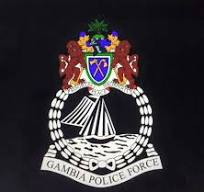

The Gambia Police Force is the primary independent domestic intelligence, security and law enforcement agency in The Gambia. Under the Ministry of the Interior, the force is headed by an inspector general of police. The current size of the force is 5,000 uniformed and plain-clothed officers. The Gambia Police Force deals with corruption via a specialized fraud and commercial crimes unit.
The first police force in The Gambia was the Gambia River Police, formed in 1855. Prior to this, security in the small colonial enclaves was provided by British troops and a small local militia, drawn from traders, freed slaves, and other settlers. The River Police's role was to control smuggling, enforce taxation, and prevent insurgencies. Its 10 men were aided by the local militia, and were further reinforced in 1866 by the establishment of the paramilitary Gambia Constabulary. Initially formed with 40 constables, this was increased to 100 in 1870. At this point, all imperial troops were withdrawn from the colony and policing was left to the Constabulary and local militia


The Police Intervention Unit(PIU) is an important unit under the Gambia Police Force(GPF) thats plays a crucial role in maintaining law and order within the country.
The PIU is specialized unit that is trained to handle various high-risk situations. including civil nrest,riot cotrol and public demonstrations. They are responsible for ensuring public safty, maintaining peace and protecting both citizens and property during such events.
The unit operates under specific guidelines and protocol to ensure their work is lawful and inline with the principles of human right.
As part of their duties, The PIU's are trained crowd management techniques to handle large gatherings effectively .They employ non-lethal means to dispased crowds and maintain order in riot using such as shields, baton, tear gas and rubber bullets projectiles and so much that to avoid unneccesry harm to both the public and themselves whiles handling potentially violatile situations.
Additionaly the PIU's often collaborate with other units within GPF and various government agencies to mintain public safety during important events , such as political rallies, national holidays or major sport events. They worked in close coordination with event organizers and locl authorities to ensure that public order is maintained and potential threats are mitigated.
Its essentially to note that while the PIU primarily focuses on managing public demonstrations an crowd control, They also assist in other law enforement activities when required. This could include supporting regular police officers during arrest and conducting crime scene management or assisting in special operations that required their expertises.
In summary the police Intervention Unit(PIU) is a specialized unit under the Gambia Police Force (gpf) responsible for maintaining public order and safety during events involving civil unrest,demonstrations or potential threats to public peace.
Traffic police (also known as traffic officers,[1] traffic enforcement units, traffic cops, traffic monitors, or traffic enforcers) are police officers, units, and agencies who enforce traffic laws and manage traffic. Traffic police include police who patrol highways, direct traffic, and address traffic infractions. They may be a separate agency from a main police agency, a unit or division within a police agency, or a type of assignment issued to officers; they can also be part of a transportation authority or highway authority.
It has been noted that:
...traffic police, who are regarded as peripheral to most police forces, participate in both authoritative intervention and symbolic justice. Perhaps alone of all the assignments, traffic police are full-service police. They are different from the rest, however, because their work is limited to a particular venue—namely, public thoroughfares—and to particular people—namely, those who operate motor vehicles. But in terms of work, traffic police are detectives as well as patrol officers.[2
Officially, the lab will strengthen the country’s digital forensic and investigation capabilities. “By handing over this brand new laboratory to the Gambian authorities, ECOWAS and its partners wish to build the capacity of the Gambian police to effectively counter cybercrime in the country and to better cooperate with the other Member States in terms of managing cybercrime problems,” a release dated October 18, 2022, informs.
The lab, funded by the European Union and ECOWAS, is equipped with state-of-the-art equipment, including forensic equipment (forensic duplicator and imager, forensic laptops, forensic workstation/server, etc.), generic hardware, software, and licenses.
In recent years, The Gambia has been plagued by the continuing rise of cybercrime. In 2020, the country faced a series of cyber incidents, including attacks on financial institutions, revenge pornography, and the publication of nude pictures on the Internet. Despite the measures taken by the government, cybercriminals are not backing down. According to Interpol's October 21, 2021 report on key cyber threats in Africa, the majority (60%) of the actors carrying out global False International Bank Transfers (FOVI) are based in eleven African countries, including the Gambia (which accounts for less than 1%).
To address these cybersecurity and cybercrime issues, foster cooperation between states, and take part in the implementation of the ECOWAS cybersecurity agenda, the European Union and the ECOWAS Commission have joined forces around the "Organised Crime: West African response to Cybersecurity and fight against Cybercrime" (OCWAR-C) project. The Gambia’s digital forensic lab is an offshoot of the project.
In March 2021, under the same project, equipment was handed to the Burkina Faso Central Brigade for the Fight against Cybercrime (BCLCC)’s digital investigation laboratory. Also, cybersecurity training and awareness campaigns were recently organized to strengthen ECOWAS member countries’ capacities to fight cybercrimes.
Each of our member countries hosts an INTERPOL National Central Bureau (NCB). This connects their national law enforcement with other countries and with the General Secretariat via our secure global police communications network called I-24/7.
NCBs are at the heart of INTERPOL and how we work. They seek the information needed from other NCBs to help investigate crime or criminals in their own country, and they share criminal data and intelligence to assist another country.
As part of their role in global investigations, NCBs work with:
Law enforcement agencies in their own country
Other NCBs and Sub-Bureaus around the world
The General Secretariat’s offices worldwide
NCBs contribute national crime data to our global databases , in accordance with their respective national laws, and cooperate on cross-border investigations, operations and arrests..